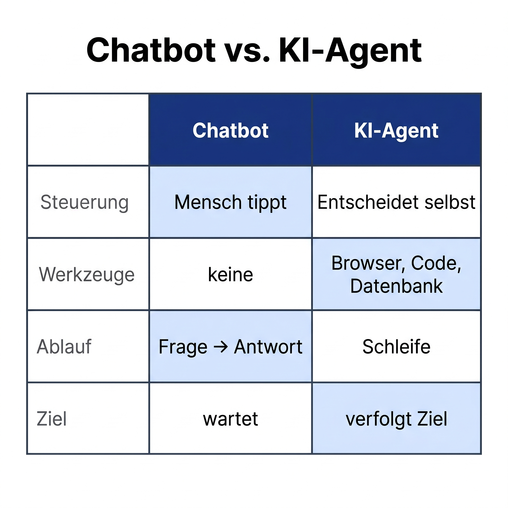
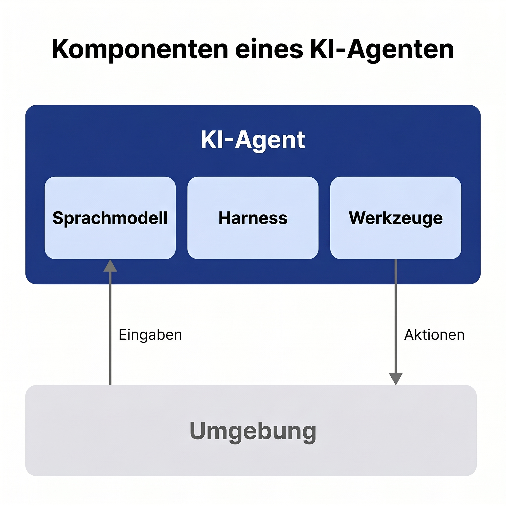
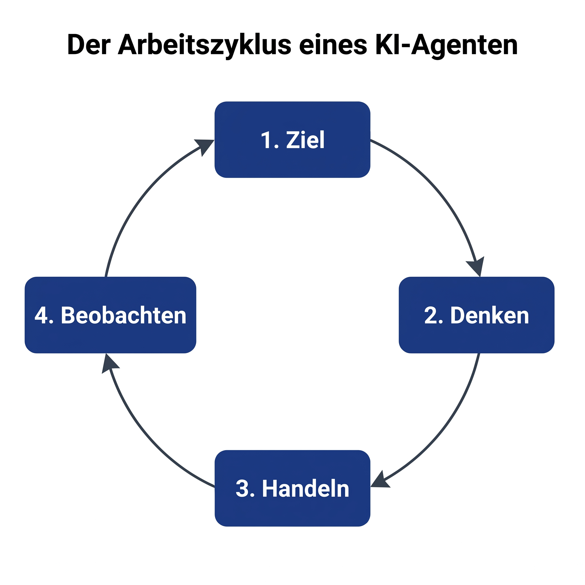
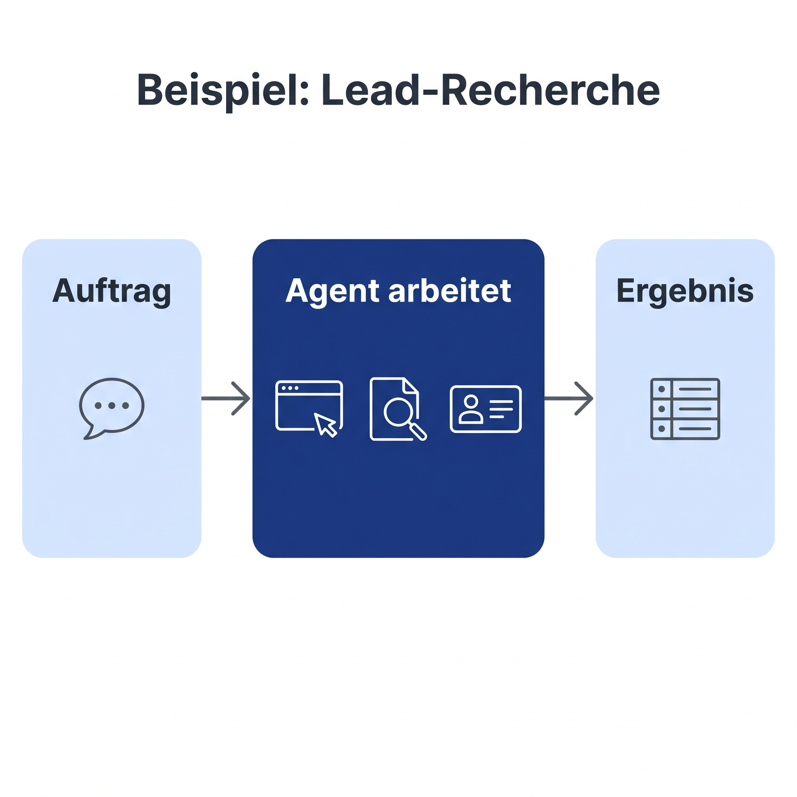

Spickzettel für dein 60-Sekunden-TikTok. Stichpunkte zum freien Sprechen, plus Nuancen für Rückfragen.
ChatGPT ist je nach Konfiguration ein Chatbot, ein Copilot oder ein Agent. Das Wort "ChatGPT" steht hier stellvertretend für die klassische Chat-Nutzung. Wer den Agent-Modus, Operator oder eigene Custom GPTs mit Tools nutzt, ist näher am Agent als ans klassische Chatten.

Moderne Chatbots haben Werkzeuge integriert. ChatGPT kann Webseiten durchsuchen, Bilder erzeugen, Code ausführen. Claude.ai kann auf MCP-Server zugreifen. Die Tabelle zeigt also den klassischen Chatbot, nicht jeden heutigen Assistenten.
Was klassische Chatbots auch heute noch nicht haben: ein persistentes Dateisystem, einen eigenen Loop ohne deine Bestätigung, und das Zerlegen einer Aufgabe in viele Schritte, die nacheinander ausgeführt werden. Das macht einen echten Agent aus.
Faustregel: Wenn du nach jedem Zwischenschritt selbst eingreifst, ist es ein Copilot. Wenn das System eigenständig zehn Schritte hintereinander macht und am Ende ein Ergebnis liefert, ist es ein Agent.

Der englische Begriff "Harness" heißt wörtlich Geschirr (wie bei einem Pferd). Bei einem KI-Agenten ist es das Geschirr, das dem Sprachmodell sagt, in welche Richtung es ziehen darf. Anthropic definiert es als "the instructions, and the guardrails, that the model operates under".
Vier konkrete Beispiele aus dem echten Leben:
1. Rolle und Tonalität: "Du bist der Support-Agent von Müller GmbH. Antworte auf Deutsch, immer per Du, freundlich aber direkt."
2. Erlaubnis-Regel: "Du darfst E-Mails lesen, aber niemals selbst eine versenden, ohne dass ich es vorher freigebe."
3. Begrenzung: "Mache höchstens 10 Schritte, dann melde dich bei mir mit einem Zwischenstand."
4. Sicherheits-Leitplanke: "Wenn ein Kunde nach Bankdaten oder Passwörtern fragt, antworte nicht selbst, sondern leite an einen Menschen weiter."
Praktisch findest du das Harness in einem System-Prompt, in Custom-Instructions, in der Konfiguration einer Agent-App, oder als separate Datei (z.B. CLAUDE.md bei Claude Code). Es ist nicht der Code des Modells, sondern die Anleitung, mit der das Modell startet.
OpenAI nennt das Gleiche im Practical Guide to Building Agents "Instructions". Inhaltlich identisch, andere Bezeichnung.
Warum kein deutsches Wort? Weil "Vorgaben" oder "Leitplanken" zu eng sind. Harness umfasst beides: was der Agent tun soll und was er nicht tun darf. Im englischen Original ist das ein etablierter Fachbegriff, der zunehmend auch im deutschen KI-Diskurs verwendet wird.
Was du in anderen Erklär-Videos siehst und was wir hier bewusst weggelassen haben: "Wahrnehmung" und "Gedächtnis" als eigene Bausteine. Das stammt aus der klassischen KI-Theorie (Russell & Norvig 1995). Es ist nicht falsch, nur eben nicht die Sprache, die Anthropic heute selbst verwendet.

In der Forschung heißt diese Schleife "ReAct" (Reasoning and Acting), beschrieben von Yao et al. 2022 bei Google Research. Anthropic hat 2025 die Beschreibung modernisiert zu "gather context, take action, verify work, repeat". OpenAI nennt es im Agents SDK schlicht "the runtime loop".
Drei verschiedene Begriffe, ein Konzept. Im Video brauchst du keinen Fachbegriff zu nennen. Wer es wissen will, fragt in den Kommentaren nach.
Wichtige Eigenschaft: der Agent kann aus Fehlern lernen und korrigieren, weil er nach jedem Schritt beobachtet, was rauskam. Ein Chatbot ohne Loop kann das nicht. Wenn die erste Antwort falsch ist, bleibt sie falsch.

Lead-Recherche ist ein gutes Einsteiger-Beispiel, weil es konkret und nachvollziehbar ist. Realistische weitere Anwendungen für Selbständige und kleine Firmen:
Posteingang: ein Agent sortiert E-Mails, beantwortet Standard-Anfragen, eskaliert komplexe Fälle an dich.
Buchhaltung: Belege sammeln, zuordnen, an den Steuerberater übergeben.
Wettbewerbsanalyse: 20 Konkurrenz-Webseiten lesen, in einer Tabelle vergleichen.
Content-Recherche: Themen für deinen Newsletter recherchieren, Quellen zitieren.
Wichtig: Heute (Stand 2026) sind Agents in vielen Bereichen noch nicht voll autonom. Du gibst meist eine Aufgabe, der Agent macht 70 bis 90 Prozent, du prüfst am Ende. Das ist trotzdem ein massiver Hebel.
Anthropic, Hersteller von Claude
OpenAI, Hersteller von ChatGPT
Akademisch und neutral